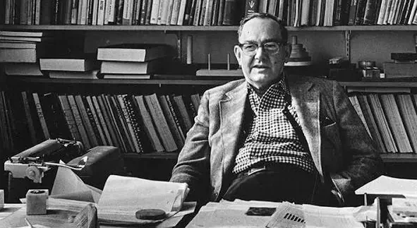
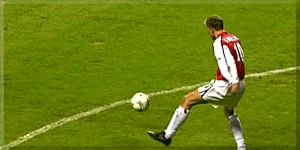
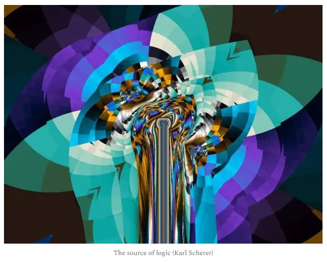

随笔：逃离（Escape）——MX
Essay: Escape – MX
关于"分析泡沫"的一些想法与反思。
人类渴望理解。理解与从中推导认知的欲望，最终促成了我们这个物种的一个基本概念：分析。这一冲动历经数百年，最初主要应用于文学，后来日益进入人类具有竞争性的身体活动——体育。它每个周末令数十万人着迷；要在结果背后理解其逻辑——即便那里并无逻辑——的冲动，正变得越来越无处不在。然而，早在人们完全明白"分析"是什么之前，分析就已经存在了——分析并不会仅仅因为你意识到自己在做它，就变成分析。追溯分析的哲学源头，纯粹的分析只是交流（communication）的一个子形态：通过把一个整体拆解为部分来进行交流。
如果我们把分析理解为更大的交流语境的一部分，那么欧洲的分析形态主要经由博客和数字平台发展起来——与整个世界持续的技术化同步——就几乎不令人意外了。分析一直存在，但只有有了互联网，它才获得了新的意义：交流第一次能够以永久的方式触达潜在无限的受众。这解释了它起源上的一个表面矛盾：分析持续存在，却始终依赖于其接受者。没有受众，它就没有效果。用尼克拉斯·卢曼（Niklas Luhmann）的话说，交流并非仅由"发送"产生，而由接受者的"理解"产生。因此分析不是孤立的行动，而是一个互动的过程。
然而在社交媒体时代，这种依赖性日益走向死胡同。高度复杂的事务被期望在三十秒内被变得可理解、可消费、可娱乐。悖论的是，社交媒体制造了比以往任何时候都多的接受者——同时制造了注意力的结构性稀缺。格奥尔格·弗兰克（Georg Franck）将此称为"注意力经济"（attention economy），在其中，可见性而非真相或深度成为核心货币。长期以来，分析是一个对话性的过程：呈现、结构化、权衡——发送者与接受者之间依赖共鸣与反思的相互交涉。尤尔根·哈贝马斯（Jürgen Habermas）的"交往行为"（communicative action）概念正抓住了这一点：理解产生于论点被给予时间与空间之处。在短格式（short-form）内容中，交流延续着——往往拥有巨大的触达——但交流发生的渠道已经转移。

"信息的富有制造了注意力的贫乏。" —— 赫伯特·A·西蒙（Herbert A. Simon）
分析越来越堕化为小报式夸张的工具。诸如"新战术""世界上最好的逼抢""这就是现代足球"之类的标题暗示着分析，却主要遵循市场逻辑。分析在语言上被放大，仿佛它必须被出售：最新的产品、同类中最好的、更快、更高、更远。足球作为消费品已经确立——但如今连分析那田园诗般的后院也不能幸免？马歇尔·麦克卢汉（Marshall McLuhan）的名言"媒介即讯息"在此变得尤为具体可感：格式不仅决定了形式，而且日益决定了分析本身的内容。任务在于把分析重新夺回为一种对理解的追求，并遏制它被化约为一种可消费的、由注意力驱动的产品——也许现代性的挑战并非重新发明分析，而是把时间、深度与对话能力归还给它。
继续那个"田园诗般后院"的比喻：分析正日益变成一座熙熙攘攘的城市。这里一个小摊贩，那里一家店铺——不，我什么都不想买。救命，我这是落到哪儿了？到处拥挤，人人都紧张，人人都陷在奔忙之中，在追逐、在欲求。我只想要那份田园：一杯咖啡、一点平静、一场深入的对话。但田园已死。也许，作为分析者，人有时会感到某种空虚——一种大都市式的忧郁——那种被过度刺激的非人格性所带来的空虚。
"大都市人被货币交换的经济所迫，走向一种精确与客观，从而使个人生活失去了它的温度。"
—— 格奥尔格·齐美尔（Georg Simmel），《大都市与精神生活》，1903 年
但让我们再把镜头拉远一点：我常在"X"或 YouTube 上体验到这种感觉。信息充裕，且常为吸引注意而被高亮。然而，关于复杂话题的更多信息并不自动带来更多知识；它产生噪音——我先前用比喻描述过的噪音。这种持续的噪音同时耗竭本已稀缺的注意力资源，并制造出一个永久的刺激环境，导致语境化与阐释的缺乏，同时让许多人筋疲力尽——又一个战术视频、又一条推文、又一段关于最佳逼抢的短视频？唉——这声"唉"正是科学所称的"碎片化认知"（fragmented cognition）。算法天然放大极端——在体育中亦然：愤怒、"全大写标题"或推销，驱动着互动。
这一批评并不针对用户或分析者；我们都被困在一个带有激励结构（incentive structures）的系统里。尽管如此，我想提请人们注意分析圈日益增长的泡沫化与意识形态极化——它们被极端和语境化的缺乏所放大。快速的易得性与民主化带来了信息、带来了知识，但这种充裕也造成了理论与平衡的耗竭。我们在体育中经历着一种伪多元化，一种游戏中并不存在的、被暗示出来的逻辑，由算法通过点赞和浏览量加以显现。
一个具体的例子：关系主义（relationism）。一个迷人的话题，鲜有人探究——然而仅仅是这个词就如此强烈地触发算法关注，以致它被过度使用，被化约为一个非黑即白的概念，并被确立为一种教条，而不是容许恰当的理论讨论。我们如何走出这种处境？人人都有品味，人人都有偏好——是的，人人都有自己的教条。我们是人——接受这一点。正如勒内·马里奇（René Marić）曾说过的，教条可以通过将彼此连接、通过让不同的想法相遇而被化解。或者如杰米·汉密尔顿（Jamie Hamilton）所说：把分析感知为美学。如果我们把足球理解为美学，那么足球就成了艺术——但什么是艺术？艺术是不可定义的。如果我们接受足球是某种没有逻辑的东西，我们或许至少能把自身从既定的思维规训与教条中解放出来。不要让自己被禁锢——去感受美学。
"我们生活在一个信息越来越多、意义却越来越少的世界。"
—— 让·鲍德里亚（Jean Baudrillard），《拟像与仿真》，1981 年
如果我们转向历史，文学哲学向我们表明，连"自由"这一概念都使意见分裂——自由是使分析得以可能，还是仅仅强化现状、从而阻止真正的分析？然而，也许这并非真正的问题。也许问题不在于自由与不自由，而在于我们是否把逻辑理解为自由的对立面。逻辑暗示着二元的结论——真或假、对或错——而这与"游戏的精神"（spirit of play）相冲突。游戏有规则和目标，然而在玩耍的行为之中并不存在普遍真理。日益增长的均一感与排练感——那种人人都以相似方式踢球的印象——常常创造出一种感觉，仿佛比赛遵循着单一、普遍的逻辑，仿佛逻辑决定了比赛，而不是比赛塑造了逻辑。

美学。
我关心的与其说是足球中什么是客观的对或错，不如说是我们作为分析者和教练，有时如何把自己的想法呈现为普遍真理。这样做时，我们暗中暗示比赛内部存在一种纯粹的逻辑——一种可能根本并不存在的逻辑。我要主张，体育的存在主要是为了唤起参与者与观看者的情感——一种可以经由美学来理解的经验，在其中艺术成为逻辑的对立面，正如托尔斯泰所暗示的那样。这挑战了那种认为结果或成功应凌驾于一切之上、并支配我们踢球风格的信念。
如果不存在单一的"正确"踢法，那么也就不存在单一的正确分析，能把它彻底解剖为确定的部件。正因如此，我们必须给模糊的边缘留下空间——即便冒着削弱我们阐释中清晰性或精确性的风险——并接受并非一切都能被清晰地识别或归类，因为纯粹的逻辑在这里并不存在。然而我坚信，通过在比赛中给不确定性与模糊性留出更多余地，我们向全新的理解世界敞开自身。正因如此，更重要的恰恰是问自己：作为分析者，我们是谁，我们又想成为什么。我们不能再把自己分成"我们"和"他们"，而应把自己理解为一种共同的足球观察者形态。汉娜·阿伦特（Hannah Arendt）把思考描述为一种只在交流中展开的活动，某种在人"之间"（in-between）涌现的东西。因此，分析不是一种占有物，而是一个过程。我们需要重新敢于做更多：承认我们自己（天然的！）推理上的弱点，披露我们个人的假定，更诚实地彼此讨论。多去知道自己所不知道、且永远不会知道的东西。

出于这一原因，我对那种把"普遍受训的分析者"与"教学式（didactically）受训的分析者"截然分开的做法持怀疑态度——也对只偏向其中一种的招聘广告持怀疑态度。皮埃尔·布迪厄（Pierre Bourdieu）表明，场域往往通过分化而非理解来稳定自身；区隔成为一种社会标记，而非质量问题。阶级斗争！那真的是我们想要的吗？把体育的职业化与一种开放文化对立起来？这在从教练教育到分析者圈子的整个链条上一以贯之：从未当过职业球员的人被排除在外。在通识教育中不达标的人，在足球中也同样不达标。这是市场逻辑与足球的耦合——而我们需要回到开放的足球，即便这种开放在某些地方需要一种令某些决策者不适的自我批判。打破既定的逻辑，也意味着接受逻辑无法被预先规定。
"技术从不是中立的；它总是在改变知识被承认的条件。"
—— 尼尔·波兹曼（Neil Postman），《技术垄断》，1992 年
以这种方式标准化分析的尝试，导致线性思维的强加——一种分析的"工作流化"。信息过载的持续噪音强化了这一效应。我日益观察到一种交流上封闭的、以俱乐部为基础的分析者泡沫，其中几乎不欢迎外部交流。然而分析的核心被遗忘了："没有交流的思想是空的"，哈贝马斯写道——知识在对话中涌现。分析靠共同的解剖、靠矛盾、靠批判性的（自我）质疑而繁荣。
本文不是对圈子的评判。毋宁说，它是一种不安的表达——一种自我反思式的评判。我也曾长期让自己被派系、被对职位的追逐、被对注意力的追逐所引导，并对此产生了依赖。只有当我意识到这一点，并走上一条更具教学性的道路——除对比赛的好奇之外别无目标——新的足球世界才向我敞开。一种不以真理、而以暂时性知识表达的求知欲；以视角而非教条；以理论作为工具而非标签。也许我们的力量不应在于更快、更响或更大。也许它在于承受数字时代的噪音。当分析不再容许矛盾时，它便终结了。但当分析变成纯粹的消费时，它同样终结。不过，为了给本文一个正面的结尾——与此同时，机会比以往任何时候都多，战术摄像机比以往任何时候都多，可供分析的比赛也比以往任何时候都多。
如何使用它，掌握在我们手中。
作者简介（Next Generation 栏目说明）：我们正在重启 Spielverlagerung。在"Next Generation"栏目下，我们的新作者、分析师和教练发布他们的作品。他们中有些人已有经验，有些人则刚刚迈出写文章的第一步。并非所有稿件都已成熟，但为了作者自身的成长，我们认为让它们公开可得、以便交流与讨论非常重要。因此我们希望大家把"Next Generation"的文章理解为一个发展中的项目，并以过程的标准来衡量它。部分文章已经达到可以出现在 Spielverlagerung 首页的水准。